Overreacting – from React to Hotwire
Igor Aleksandrov,
Welcome everyone. I'm Igor Aleksandrov, CTO and co-founder of JetRockets. Today I'm going to tell you a story about how we spent four years building a React SPA, realized we'd made our lives harder than they needed to be, and then spent the next two years migrating back to Rails. This is not a React-bashing talk — it's an honest post-mortem about choosing the right tool for the job, at the right time.
A technical geek
On Rails since 2009 (RoR 2.2+)
CTO and co-founder of JetRockets
Docker Captain
Open-Source enthusiast
Serial "Tropicaner"
Quick intro — I've been building Rails apps since 2009, which means I was writing Rails before most of you probably knew what a web framework was. I'm CTO and co-founder of JetRockets, a product development agency. I'm a Docker Captain, I love open source, and this is not my first Tropical on Rails — hence "serial Tropicaner".
A serial immigrant
Originally from Russia.
Since March 2022 we have lived in Georgia 🇬🇪 (the country).
Moved to the U.S. on July 1st, 2025.
Settled in Georgia 🍑 (the state).
A little context on me personally. I'm from Russia originally. In March 2022 we made the decision to leave, ended up in Georgia — the country, not the state. Then in July 2025 we made the leap to the US and settled in... Georgia. The state. Yes, I know. Apparently I have a type. At least both have great food.
The story
The story I'm going to tell you is about SafariPortal — a product we've been building with our client Rachel West for the past six years. Let me give you some context on what it is and how it evolved — because the product's growth is inseparable from the architectural decisions we made.
Six years ago…
We got a brief to build an itinerary builder for high-end travel agents and tour operators.
Six years ago, Rachel came to us with a brief: build a tool for high-end travel agents and tour operators to create beautiful, interactive itineraries for their clients. Think luxury safari trips to Kenya, private tours of Japan — the kind of travel where the itinerary itself is part of the experience. The product needed to feel premium, interactive, and capable of generating stunning PDF documents clients would actually want to keep.
We decided to build a React SPA with a Rails API backend.
We had good reasons for that decision at the time.
We made the call to build a React SPA backed by a Rails API. And I want to be clear — this was not a thoughtless decision. We had real, defensible reasons. The UI was going to be complex and interactive. We had React expertise on the team. And as I'll show you in a moment, the Rails frontend landscape in 2020 genuinely wasn't ready for what we needed to build.
What did Rails offer for the frontend in 2020?
Rails 6.0 – released April 2019
Webpacker – default for JavaScript bundling
Stimulus – just released (early 2018), still maturing
Put yourself back in 2020. Rails 6 had just landed. Webpacker was the default for JavaScript — and if you used it, you know how that went. Stimulus had been out for about two years and was still finding its footing. The Rails frontend story was honestly not compelling for a complex interactive application. There was no Turbo, no Hotwire, no morphing. The tools that make Rails a complete frontend solution today simply didn't exist yet.
Turbo didn't exist yet!
It was released December 2020.
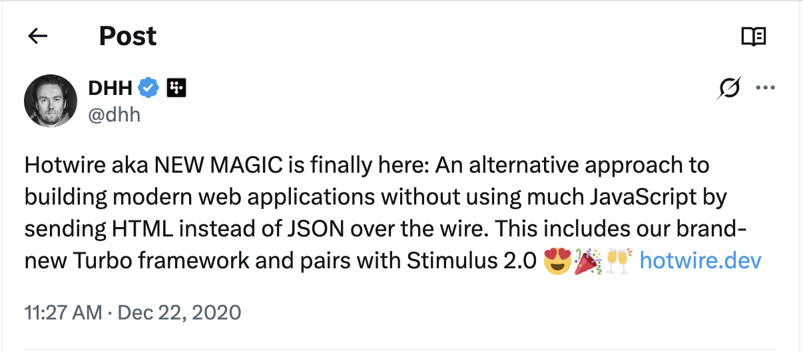
Turbo didn't exist. It would be released in December 2020 — months after we started the project. We couldn't have used it even if we'd wanted to. This isn't hindsight rationalization — the tools literally weren't there.
https://x.com/dhh/status/1341420143239450624
Even HotWire wasn't announced…
It was called "New Magic" until December 2020.
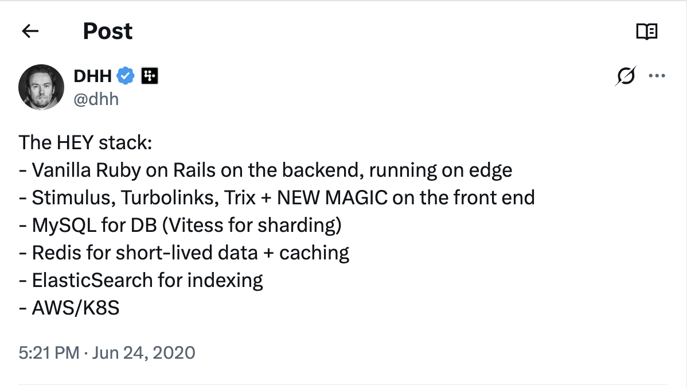
And Hotwire was still being called "New Magic" by DHH. It wasn't even Hotwire yet. The framework we'd eventually migrate to literally didn't have a name when we were making our architecture decisions. I include these tweets not to excuse the decision, but to show that anyone making the same call in 2020 would have come to the same conclusion.
https://x.com/dhh/status/1275901955995385856
What React offered in 2020?
Mature ecosystem with Create React App
Proven patterns for complex SPAs
Rich component libraries and tooling
Team expertise and hiring pool
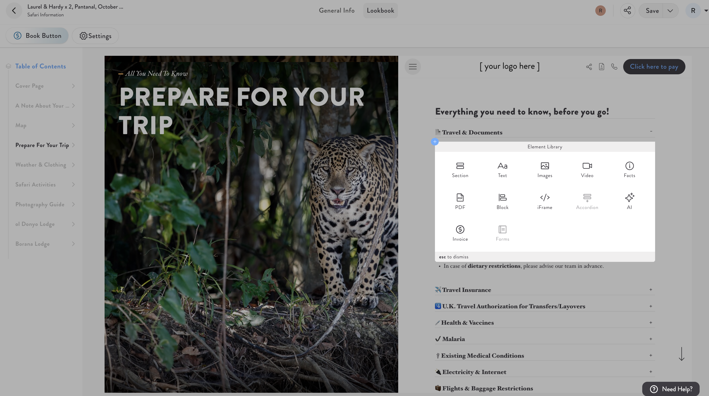
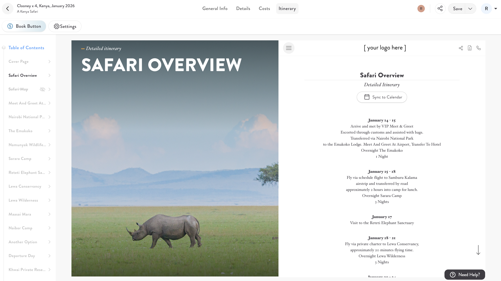
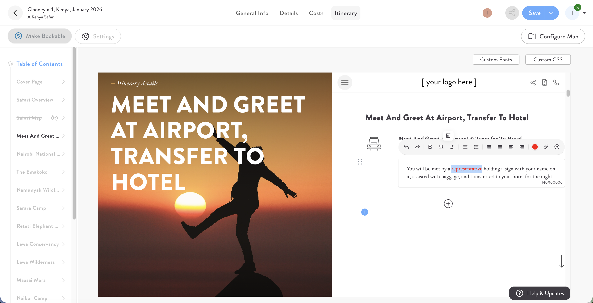
Meanwhile, React was the clear industry leader. Mature ecosystem, Create React App made setup trivial, Redux gave you predictable state management, and critically — the team knew it well and hiring React developers was straightforward. These screenshots at the bottom are from the actual SafariPortal itinerary builder. This is the kind of rich, interactive UI we were building. React was genuinely the right tool for this, in 2020.
Overall, React felt like the safer,more mature choice.
For a complex, drag-and-drop itinerary builder with real-time updates, PDF generation, and rich interactions — React was the right call for 2020. I still believe that. The mistake wasn't choosing React. The mistake was not reassessing when everything changed around us.
And we gained some success
Travel Weekly Magellan Gold Award, 2023
World Travel Tech Awards, 2023
DEVIES Awards, 2023
Web Excellence Award, 2023
And more…
And the product did genuinely well. Multiple industry awards in 2023. Travel Weekly's Magellan Gold is a significant recognition in the travel tech space. The itinerary builder was impressive and clients loved it. I want to emphasize this: SafariPortal was not a failing project. It was a successful product. Which is exactly what makes the growing pains that followed so instructive — these problems don't announce themselves when things are going well.
Our React SPA: SafariPortal in June 2024
Itinerary builder & travel operations software for high-end travel agents and tour operators
Creates stunning interactive itineraries quickly and easily
Scale:
174,512 code lines
53 unique routes
2000+ files (1,045 JS (43.6%), 1,351 TS (56.4%))
178 packages in dependencies
>20 supported languages
Team: 12 developers working on it
By June 2024, SafariPortal was a substantial codebase. 174,000 lines of code. 53 routes. Two thousand files. 178 npm packages. 20+ supported languages. At this scale, the architectural decisions you made on day one have compounding consequences. Every file you add touches more files. Every new feature requires understanding more of the system. The complexity tax compounds.
The technology choices we made
Frontend
Create React App (CRA)
Redux for state management
React Router
Axios for API calls
I18n-js
Backend
Rails API
REST endpoints + JSON responses
The stack was very much of its era. Create React App for the frontend — which, by 2024, was deprecated and unmaintained. Redux for state management. React Router. Axios. On the backend, a Rails API serving JSON. Two separate applications communicating over HTTP. Clean separation of concerns — and also the source of constant friction. Every feature lived in two places.
The good parts
Rich Interactive UI
Complex itinerary builders with drag-and-drop
PDF generation and previews (with performance issues)
Developer Experience
Hot reloading with CRA
Component reusability across different modules
"Modern Development"
To be fair, React genuinely served us well in some areas. The drag-and-drop itinerary builder was complex UI and React handled it well. Hot reloading with CRA was a great developer experience. Component reusability across modules was real. I mention this because I want to be balanced — this isn't a "React is bad" talk. React solved real problems for us. The question is whether those benefits justified the overhead as the product matured.
In 2024 we decided to switch back to Rails SSR…
Because of multiple growing pains.
In 2024 we made the decision to start building new features in Rails with Hotwire instead of extending the React app. This wasn't an impulsive decision — it was the result of several compounding pain points that had been building for years and became impossible to ignore when the business needed to move fast.
Reason #1 – RDD
RDD stands for resume-driven development. I got tired of it.
Resume Driven Development at SafariPortal looked like the perfectly defensible engineering decision every stakeholder nods along to: a React SPA with Redux for state management, a clean JSON API backend in Rails, and the full ceremony of a "modern" frontend architecture. When we built it in 2020, you could point to it at a conference and nobody would raise an eyebrow — React was the industry standard, SPAs were how serious applications were built, and choosing anything else required justification. The stack looked great on a job posting and felt even better to describe in a technical interview.
The problem was that it was optimized for impressiveness, not for the actual work SafariPortal needed to do. The application was fundamentally a form-heavy, data-dense CRM — exactly the kind of software Rails was built for. But instead, every new feature required a Redux action, a reducer, an API serializer, a React component, and a coordinator sitting between the backend and frontend developers to make sure they weren't blocking each other. Shipping a new form field touched seven files across two conceptual applications. The architecture created the appearance of sophistication while quietly taxing every sprint.
Where did things start to hurt?
Redux boilerplate for simple itinerary updates.
Build times getting longer as features grew.
Coordination between frontend and backend decreases development speed and efficiency.
It wasn't until we faced a hard deadline — four new major modules in a single year — that the true cost became impossible to rationalize away. Redux boilerplate for every state update. Build times crossing the five-minute mark. Frontend and backend developers constantly waiting on each other. These weren't edge cases — they were the rhythm of every sprint.
The tax wasn't just measured in lines of code or story points — it was measured in mental energy. Every developer had to hold two separate mental models simultaneously: the Rails domain on the backend and the React/Redux state model on the frontend. A backend developer touching the frontend needed to re-learn component conventions, prop drilling patterns, and whatever state shape Redux had evolved into since they last looked. A frontend developer filing a bug had to trace execution across the API boundary before they could even begin to understand the problem. The cognitive overhead was invisible in sprint planning and never showed up in velocity metrics — but it was there, compounding quietly.
Look at this. This is actual production code from SafariPortal — a single function to save a page in the itinerary builder. It handles optimistic UI updates, session storage flags to suppress self-broadcast events, lock version conflict detection, and rollback logic on failure. It's not bad code. It's the right code for what it needed to do. But consider the surface area you need to understand to reason about it: the Redux store shape, the API contract, the session storage convention, the error handling. All of this for a save operation. Now multiply that across 53 routes.
What was it like for the team?
Context switching between React logic and Rails backend.
State management debugging for complex workflows.
API contract maintenance and responsibility problems.
And the tax wasn't just measured in lines of code or story points — it was measured in mental energy. Every developer on the team had to hold two separate mental models simultaneously: the Rails domain on the backend and the React/Redux state model on the frontend. Context switching between them wasn't free. A backend developer touching the frontend needed to re-learn component conventions, prop drilling patterns, and whatever state shape Redux had evolved into since they last looked. A frontend developer filing a bug had to trace execution across the API boundary before they could even begin to understand the problem. New team members faced an onboarding experience that was essentially two separate applications masquerading as one. The cognitive overhead was invisible in sprint planning, never showed up in velocity metrics, and never made it into a retrospective — but it was there, compounding quietly, draining the team's capacity to think about the actual business problems they were hired to solve.
AI didn't save us…
Split architecture forces AI to reason across two codebases simultaneously.
Generated code breaks at the seam — controller shape ≠ Redux expectations.
Two poorly documented systems that happen to talk over JSON.
Simple architecture amplifies AI, complexity taxes every prompt.
When AI coding assistants went mainstream in 2023, we expected them to multiply our productivity. Instead, they exposed just how fragmented our architecture had become. Ask an AI to implement a feature in SafariPortal and it immediately ran into the same coordination problem our developers did — except it couldn't ask clarifying questions in a standup. The context required to reason about any non-trivial feature was split across two codebases with fundamentally different conventions, languages, and mental models: ActiveRecord models and service objects on one side, Redux store and component hierarchy on the other.
To implement even a modest feature end-to-end, the AI needed to hold all of that simultaneously — and the seams between the two applications were exactly where it lost the thread. It would generate a perfectly reasonable Rails controller action that didn't match the shape the React component expected, or a Redux reducer that diverged from what the serializer actually returned. Rails conventions are deeply internalized in every major AI model — trained on decades of idiomatic code. But the moment you bolt a bespoke React/Redux layer on top and expect the AI to reason across that boundary, you've thrown away most of that advantage. Simple architecture amplifies AI productivity. Complexity taxes it — and we were paying that tax on every prompt.
Things got even worse…
We all became full-stack developers (not really).
Stakeholders' expectations shifted dramatically.
"If AI can write code, why is development still slow?"
"Why are you writing this feature from scratch?"
"AI should help prevent errors, not create complexity."
Quality expectations increased alongside speed demands
And then the AI hype hit stakeholders. Which you'd think would help. It didn't — not in the way we hoped. Everyone read the same blog posts about 10x productivity gains. Stakeholders started asking why features still took weeks when AI was supposed to make everything instant. The reality is that AI amplifies good architecture and exposes bad architecture. Ours was bad, and AI made that more visible, not less. Meanwhile quality expectations were rising — faster delivery and fewer bugs, simultaneously.
From itinerary builder → full-cycle travel CRM
The business ambition was growing while the team size wasn't. We weren't just maintaining an itinerary builder anymore — we were being asked to transform the entire product into a full travel CRM. That's when the architectural debt became an existential constraint.
Planned transformation from June 2024 – today
📋 Task manager – project coordination for travel teams.
👥 Contact management – client and vendor relationships.
💰 Financials (invoicing, expenses, payment integrations) and itinerary booking module.
📝 Form builder – custom client intake forms.
New version of the itinerary builder.
In June of 2024, Rachel West, founder and owner of SafariPortal, came to us with the idea of implementing 4 new modules: Task Manager, Contacts, Financials, and Form Builder. Not incremental improvements — four entirely new pillars that would transform the product from an itinerary builder into a full-cycle travel CRM. The timeline was aggressive. The team size wasn't changing.
This is the moment that forces honesty. When resources are unconstrained, you can afford the overhead of complexity — the coordination meetings, the context switching, the extra files touched per feature. But when you're operating lean, every inefficiency in your stack is a direct hit to your capacity. The React/Redux ceremony that felt manageable at a comfortable pace became genuinely dangerous at the speed the business needed. We weren't looking for an elegant architectural solution. We were looking for survival.
Our 2024 motto:
And that's the context in which Hotwire stopped being an interesting experiment and started being a lifeline. One developer shipping what previously required two, with less coordination overhead and a codebase that AI tools could actually reason about end-to-end. The motto wasn't aspirational — it was a constraint we had to engineer around. Limited developers, unlimited ambition forced us to find an architecture that punched above its weight. Rails gave us that.
During 2023–2024 we gained extensive Hotwire experience
Orbit
OneTribe
SchoolsOut
Raisify
Casper
RPI
Saymore
And more…
While SafariPortal was struggling with its React overhead, we were building other products at JetRockets — all on Rails with Hotwire. Orbit, OneTribe, SchoolsOut, Raisify, Casper, RPI, Saymore. These weren't toy projects — real products with real users and real business requirements. And in every single one, we saw the same pattern: smaller teams, faster delivery, happier developers. The data was accumulating.
What we confirmed
A single developer can do everything.
No frontend/backend coordination needed
A single developer could own a complete feature end-to-end
Hotwire + Turbo + Tailwind stack boosts development velocity.
The team size went down to 1–2 developers
Features that took weeks now take days
Less context switching, more flow state
Server-rendered, but felt like a SPA
The numbers were hard to argue with. On these Hotwire projects, a single developer could own a complete feature from database schema to deployed UI. Team sizes of one or two developers were shipping features that would have required frontend-backend pairs in React. Features that took weeks now took days. It felt like a SPA but ran like a server-rendered app — fast initial load, no hydration delay, no API round-trips for every interaction.
“What if we started building new features in Rails and kept the existing React app running?”
Aleksei Solilin, co-founder of JetRockets
This was the question Aleksei Solilin, my co-founder, asked in a planning meeting. It sounds obvious in hindsight, but at the time it felt radical — almost like giving up. Don't migrate the existing React app. Don't try to rewrite 174,000 lines of code. Just stop adding to it. Build new features in Rails. Let the React app exist as a legacy system for the parts it already does well. The question unlocked everything.
The problems we knew we'd face
Authentication complexity
Two apps, one auth system – JWT in React, cookie-based in Rails
Security considerations
Deployment coordination
Asset management between two systems
Route coordination and conflicts
User Experience
Seamless transitions between React and Rails sections
Consistent UI/UX across different technologies
We weren't naive about the challenges. Running two authentication systems side by side is genuinely complex — JWT tokens for the React SPA, cookie-based sessions for Rails. Deploying two applications that users experience as one requires careful orchestration. And making the UX seamless across different rendering technologies is non-trivial. The navigation has to feel consistent, transitions can't reveal the seam between the two apps. We went in with eyes open. Let me show you how we solved each of these.
Migration Strategy Overview
Let me walk you through how we actually solved these problems. The migration happened in two phases, and each phase solved a specific set of constraints. Phase zero was about coexistence. Phase two was about operational simplicity.
Phase 0
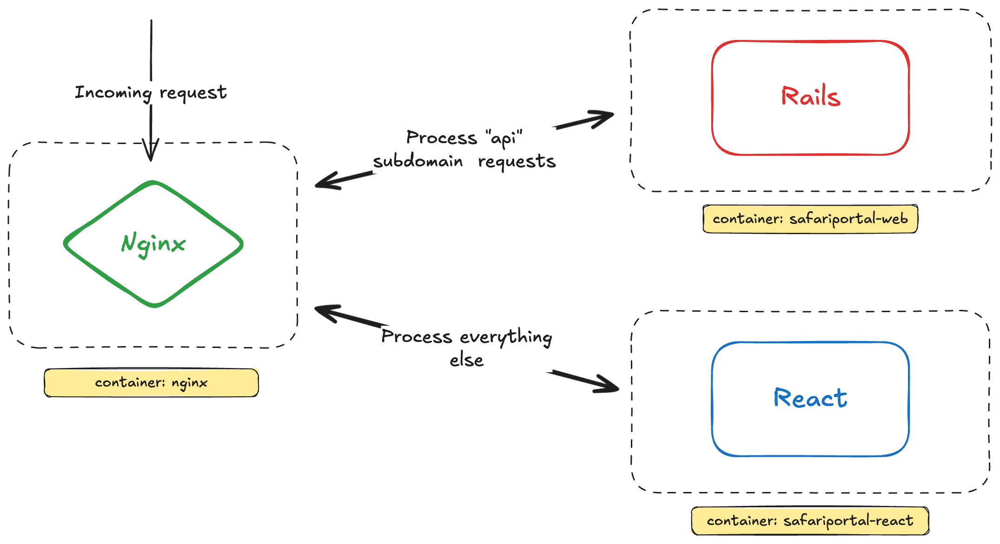
Phase zero was about containment. We used Nginx to route traffic at the subdomain level: the API subdomain went to the Rails container, everything else went to the React container. Two separate deployments, two separate processes. The user sees one domain, one product — but under the hood it's two completely independent applications. This bought us time to start building new features in Rails without touching a line of the React app. Low risk, immediate benefits.
The hybrid approach – Safari Portal architecture
Legacy Features (React SPA)
Itinerary Builder (complex UI)
PDF rendering system (with headless Chrome)
Existing user workflows
New Features (Rails + Hotwire)
Task Manager, Contact Management, Financials, Form Builder
Shared Infrastructure
Authentication (Rodauth), Common navigation
This is the coexistence architecture at its core. We drew a clear line. The legacy React SPA handles what it's already built for — the complex itinerary builder with drag-and-drop, PDF rendering with headless Chrome, the existing user workflows that work well. All four new modules — task manager, contacts, financials, form builder — are built entirely in Rails with Hotwire. Shared infrastructure means one Rodauth instance handles authentication for both. One navigation component spans both. The user never knows they're crossing a boundary.
Phase 2: Single container
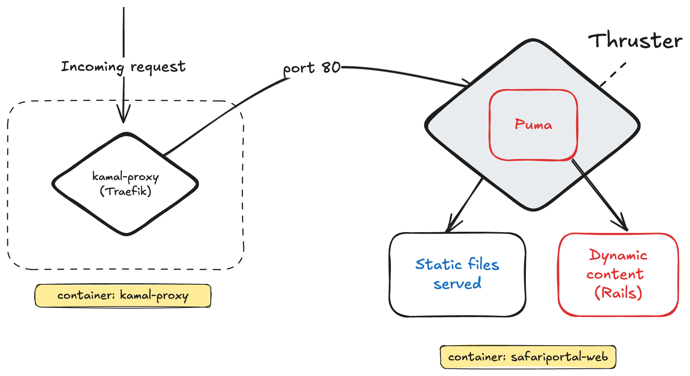
Phase two was about operational simplicity — eliminating the operational overhead of two separate deployments. We moved to a single container. Kamal proxy in front handling SSL termination and routing, Thruster handling static files and HTTP/2 push, Puma running Rails behind it. One deploy pipeline, one container, zero Nginx configuration. Much simpler to reason about, monitor, and operate in production.
Where is React in this scheme?
The obvious question. If it's a single Rails container, where does the React SPA live? We're not running two web servers anymore. The answer is surprisingly simple.
Phase 2: Single container
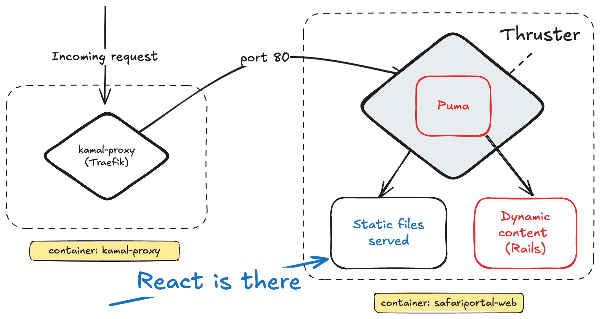
React lives in static files. We build the React app in CI, upload the output to S3 tagged by commit SHA. During the Kamal deploy, we download that build and copy it into the Rails public directory. Thruster serves it as static files — it never even hits Puma. Rails handles everything else dynamically. One container, one deploy, and the React app is just a directory in public/react/.
React rendering (routing)
Rails.application.routes.draw do
constraints DomainConstraint.domain(:account) do
# ...
constraints ->(r) { !r.xhr? && r.format.html? } do
get "/*path", to: "react#index"
end
end
end
The routing is elegant. A catch-all route at the bottom of routes.rb sends any unmatched HTML request to the ReactController. XHR requests and API calls pass through normally to their Rails handlers. The React app catches anything that Rails doesn't have an explicit route for. This means as we build more Rails routes, they automatically take precedence over the React catch-all — the migration happens route by route without any configuration changes.
React rendering (controller)
class ReactController < ApplicationController
include ActionView::Helpers::AssetUrlHelper
include ViteRails::TagHelpers
layout "react"
def index
if Rails.env.development?
redirect_to request.original_url.sub(/:\d+/, ":8080")
else
render file: Rails.public_path.join("react/index.html")
end
end
end
class ReactController < ApplicationController
include ActionView::Helpers::AssetUrlHelper
include ViteRails::TagHelpers
layout "react"
def index
if Rails.env.development?
redirect_to request.original_url.sub(/:\d+/, ":8080")
else
render file: Rails.public_path.join("react/index.html")
end
end
end
The controller is almost embarrassingly simple. In development, redirect to the Vite dev server running on port 8080 — so React developers keep their hot reloading. In production, render the pre-built index.html directly from the public directory. That's the entire bridge between Rails routing and the React SPA. No proxy, no middleware, no special configuration. Just a file serve.
Authentication
Authentication was the hardest problem to solve cleanly. We had JWT tokens living in React's localStorage and cookie-based sessions in Rails. The user should never have to log in twice — but the two authentication systems are fundamentally different. Here's how we bridged them.
Rodauth did all the job
Almost…
https://github.com/jeremyevans/rodauth
Rodauth is a middleware that sits before the Rails app.
Sign-in, recover password, OTP pages where rewritten to Rails.
React app: Rodauth configuration with JWT-based session management.
Rails app: new Rodauth configuration with traditional cookie-based session management.
We'd already been using Rodauth in Rails for the API. Rodauth is modular and pluggable enough to run two completely separate configurations in the same application — one for the API with JWT tokens, one for the Rails app with cookie sessions. The login page, password recovery, and OTP flows were rewritten as Rails views. Now both apps authenticate through one login form, one Rails endpoint. The problem was: after login, how do you get JWT tokens into the React app's localStorage without making the user do anything extra?
React session sharing
class RodauthMain < RodauthBase
include AccountRedirects
configure do
# ...
login_redirect do
if uses_two_factor_authentication?
otp_auth_path
else
rails_routes.auth_jwt_path(
redirect_uri: account_initial_path,
format: :turbo_stream
)
end
end
end
end
class RodauthMain < RodauthBase
include AccountRedirects
configure do
# ...
login_redirect do
if uses_two_factor_authentication?
otp_auth_path
else
rails_routes.auth_jwt_path(
redirect_uri: account_initial_path,
format: :turbo_stream
)
end
end
end
end
After a successful login, instead of redirecting the user directly to the React app, Rodauth redirects to a Rails action that will generate JWT tokens. The key detail is the format: turbo_stream. That's what makes the next step possible. The redirect goes to auth_jwt_path, passing along where the user ultimately wants to go as a redirect_uri parameter.
React session sharing
class RodauthController < ApplicationController
# ...
def jwt
rodauth_api = Rodauth::Rails.rodauth(:api, account: Current.user)
access_token, refresh_token = rodauth_api.generate_jwt_tokens
render turbo_stream: [
turbo_stream.set_local_storage_item("accessToken", access_token),
turbo_stream.set_local_storage_item("refreshToken", refresh_token),
turbo_stream.redirect_to(
params["redirect_uri"].presence || root_path
)
]
end
end
class RodauthController < ApplicationController
# ...
def jwt
rodauth_api = Rodauth::Rails.rodauth(:api, account: Current.user)
access_token, refresh_token = rodauth_api.generate_jwt_tokens
render turbo_stream: [
turbo_stream.set_local_storage_item("accessToken", access_token),
turbo_stream.set_local_storage_item("refreshToken", refresh_token),
turbo_stream.redirect_to(
params["redirect_uri"].presence || root_path
)
]
end
end
The jwt action generates fresh JWT tokens using the API Rodauth configuration — but scoped to the currently logged-in Rails session user. Then it renders a Turbo Stream response with custom actions: set_local_storage_item writes the access and refresh tokens directly into the browser's localStorage, then a Turbo Stream redirect sends the user on to their destination. The React app receives its tokens silently, without any extra login step. One login form, both apps authenticated, zero user friction.
Deployment
Let me show you the deployment setup, because it's cleaner than you'd expect for what is effectively two applications packaged as one.
Deployment: GitHub Actions
Build React Job
- yarn install
- yarn build
- aws s3 cp --recursive \
build s3://<bucket>/{{inputs.sha_short}}
- yarn install
- yarn build
- aws s3 cp --recursive \
build s3://<bucket>/{{inputs.sha_short}}
Kamal Deploy Job
- aws s3 cp --recursive \
s3://<bucket>/<last_folder>/ \
${{ github.workspace }}/frontend/build
- kamal deploy
- aws s3 cp --recursive \
s3://<bucket>/<last_folder>/ \
${{ github.workspace }}/frontend/build
- kamal deploy
Two jobs in CI. First, the React build: yarn install, yarn build, upload the output to S3 tagged with the commit SHA. This can run in parallel with other CI steps. Second, the Kamal deploy: download the React build from S3 — we always fetch the latest successful frontend build — then run kamal deploy. The React app and Rails app travel together as a versioned artifact. No coordination between two separate deployment pipelines. One deploy button deploys everything.
Deployment: Docker image integration
# Dockerfile
# …
FROM base
USER 1000:1000
COPY --chown=rails:rails --from=build /rails /rails
COPY --chown=rails:rails frontend/build/ ./public/react/
CMD ["./bin/thrust", "./bin/rails", "server"]
# Dockerfile
# …
FROM base
USER 1000:1000
COPY --chown=rails:rails --from=build /rails /rails
COPY --chown=rails:rails frontend/build/ ./public/react/
CMD ["./bin/thrust", "./bin/rails", "server"]
And in the Dockerfile, the entire frontend integration is one line: copy the React build output into public/react/. Thruster picks it up automatically as static files and serves it with HTTP/2. The built React application is literally just a directory in the Rails public folder. There's nothing magic about it. This is as simple as deployment gets.
What was harder than we expected?
I want to be honest about what was genuinely difficult. This migration wasn't painless and I'd be doing you a disservice if I presented it as a smooth ride. There were real friction points.
The JS world is overcentralized around React
Finding vanilla JS alternatives is sometimes hard — almost impossible.
react-dates (12k stars) – Easepick is archived
react-select (28k stars) – closest: Choices.js
react-dnd (21k stars)
react-tagsinput (1.4k stars)
The JavaScript ecosystem has a React monoculture problem. The best libraries — datepickers, multi-select components, drag-and-drop, tag inputs — are built for React first, React only, React forever. Finding vanilla JS alternatives is genuinely hard. react-dates has 12,000 stars; the main alternative, Easepick, is archived. react-select has 28,000 stars — Choices.js is a distant second with different ergonomics. react-dnd has no real equivalent. This is a concrete constraint that will cost you time when you're building production features.
Turbo Mount
github.com/skryukov/turbo-mount
Last year we built a chat with GetStream (getstream.io/chat).
GetStream offers only a React SDK — turbo-mount bridges the gap.
The solution for React-only libraries is turbo-mount — a gem by Svyatoslav Kryukov that lets you mount any React, Vue, or Svelte component directly into a Rails view using a simple data attribute. Last year we needed to build a real-time messaging feature. GetStream has a powerful chat SDK — but they only offer a React SDK. No vanilla JS, no web components. turbo-mount let us embed the React chat component inside a Rails view without any architectural gymnastics or additional build pipeline complexity.
Turbo Mount in action
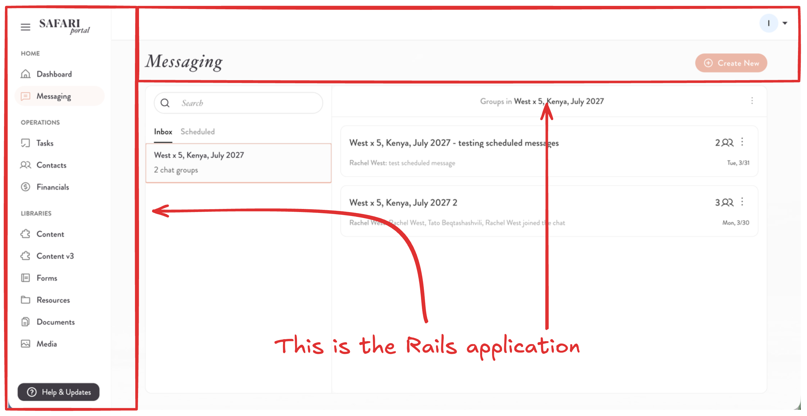
Here's how it looks in practice. The chat UI in the center of the screen is a React component mounted via turbo-mount. Everything surrounding it — the navigation, the sidebar, the page layout, the header — is Rails. The user sees a completely seamless experience. There's no visible boundary between the React component and the Rails shell.
Turbo Mount in action
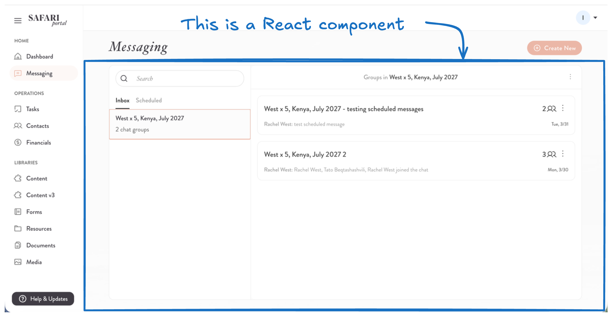
And when you click Schedule Message, a modal opens — rendered by a Rails ViewComponent, with Turbo handling the form submission and response. React and Rails side by side in the same viewport, each doing what it does best. The user never experiences a context shift.
What if you need an opposite integration?
turbo-mount handles mounting React components inside Rails views. But we had the opposite problem too: we had new Rails-powered features — fully built in Rails with ViewComponent and Turbo — that needed to be accessible from inside the legacy React itinerary builder. How do you embed a Rails view inside a React component?
Iframes!
The React app renders an iframe as a container
The iframe content is loaded from Rails
The modal is rendered with the standard modal ViewComponent
A tiny Stimulus controller handles communication with React
Iframes. I know. But hear me out before you close your laptop. The React app renders an iframe as a modal container. The iframe src points to a Rails route. The content inside is a standard Rails modal ViewComponent — the exact same component used everywhere else in the Rails app. A tiny Stimulus controller inside the iframe handles the close event by posting a message to the parent window. The React app listens for that message and closes the modal. It's not glamorous, but it's completely invisible to the user and it works perfectly.
Rails in React
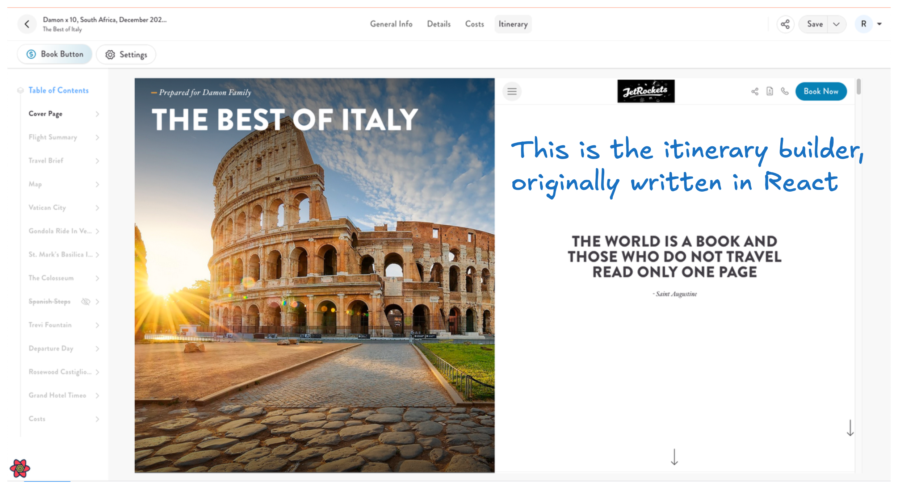
Here's the sequence. The user is working in the React itinerary builder — a complex drag-and-drop interface that's been in production for years. They click on Book Button settings.
Rails in React
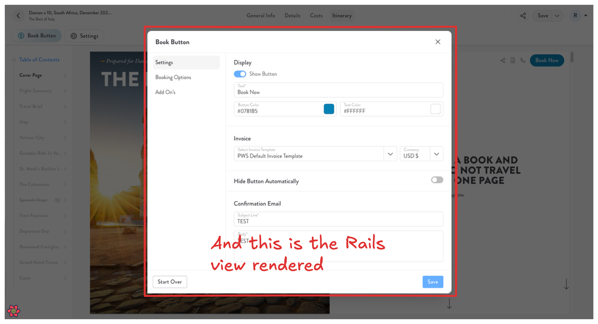
A modal appears. The content inside that modal is a Rails ViewComponent, loaded in an iframe. The tab navigation inside the modal is powered by Turbo Frames — clicking a tab makes a server request and swaps the content without a full reload. The user has no idea they've left React. The visual design is identical because both apps share the same design tokens and component library.
Rails in React
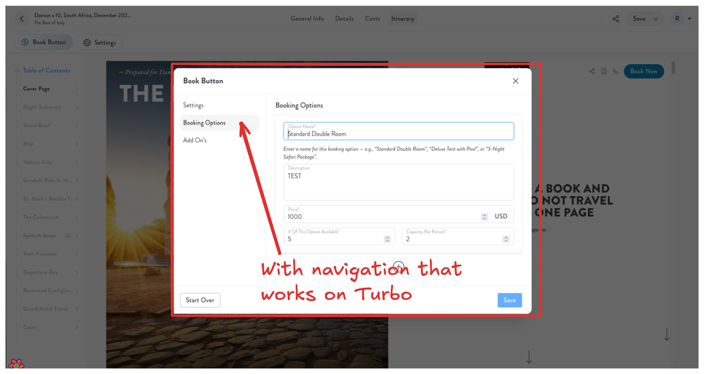
And when the form inside the modal is submitted and succeeds, the Stimulus controller posts a message to the parent React window, which closes the modal and updates its own state. The full interaction — open modal, navigate tabs, fill form, submit, close — spans two completely different rendering technologies and the user experiences it as one seamless flow.
Stimulus controller
class IframeModalController extends Controller {
# ...
closeEvent(event) {
window.parent.postMessage('closeModal', '*');
}
closeAfterSubmitEvent(event) {
const submitter = event?.detail?.formSubmission?.submitter;
const success = event?.detail?.success;
if (!submitter) return;
if (!submitter.dataset.ifameModalCloseOnClick) return;
if (!success) return;
this.closeEvent();
}
}
This is the Stimulus controller that bridges the Rails iframe to the React parent. When a Turbo form submission completes successfully and the submitter element has the close-on-click data attribute set, it posts a 'closeModal' message to the parent window. The React component listens for window messages and closes the modal in response. Twenty lines of JavaScript. This is the entire cross-framework integration layer. Sometimes the right tool is the boring one.
Outcomes
So after two years of this migration — running React and Rails side by side, building all new features in Hotwire, gradually expanding the Rails surface area — what actually happened? Let me give you the honest picture.
Rails is a one person framework
Feature iteration speed
Customer feedback → production in hours, not days.
A/B testing new flows and feature flagging became trivial.
Stakeholders can see changes immediately.
Team Happiness
One developer can finish a task from beginning to end.
DHH calls Rails a "one person framework" and we now have the receipts. Customer feedback reaches production in hours, not days. Feature flags and A/B tests that used to require coordinating frontend and backend can be done by one developer in an afternoon. Stakeholders can request a UI change in a morning standup and see it live before lunch. The organizational overhead that came from the frontend-backend split simply evaporated. And developer happiness went up — people want to own problems end-to-end, not be a cog in a coordination machine.
What we got out of these two years?
"We are coding monkeys!" – DHH.
90% of CRUDs are the same and almost nobody likes CSS.
We want to make a full-stack developer out of everyone.
Two years of this migration forced us to really confront some things. DHH is right — most of what we build is CRUD with a good face on it. The complexity we added with React wasn't serving the business problem; it was serving our architectural ego. And when we're honest about it, almost nobody on the team genuinely enjoys writing CSS. We needed to fix that if we were going to make everyone a true full-stack developer.
AI amplification effect
Rails conventions + AI = extreme productivity
RepoPrompt + superpowers-ruby makes Rails AI-native
One developer with AI delivering faster than previous 2-developer teams
The AI story completely reversed from what I described earlier. Rails conventions are deeply embedded in every major AI model — trained on decades of idiomatic Rails code. Ask an AI to build a Rails feature and it knows the patterns: MVC, Active Record callbacks, Turbo Streams, ViewComponent. It doesn't need to bridge two mental models. Our developers are now using RepoPrompt with the superpowers-ruby toolset and delivering features at a pace that would have seemed impossible two years ago. One developer with AI is now outpacing what a two-person frontend-backend pair was doing before.
Pull requests merged per quarter
These are the real numbers from SafariPortal. 242 pull requests per quarter before the migration. 406 after. That's a 68% increase — with the same team, same codebase, same product. No heroics, no crunch. Just friction removed. When developers stop context-switching between two mental models and start owning features end-to-end, this is what happens to output.
Gratitude
Before I proceed, I want to take a moment to thank two people who made this work possible. Aleksei Solilin, my co-founder at JetRockets — it was his question that unlocked the entire migration strategy. And Rafael Pena-Azar, who joined us not long ago, but did a lot for the next 10 slides to exist.
Everybody should be full-stack
The biggest organizational shift coming out of this migration: we no longer hire separate frontend and backend developers for SafariPortal. Everyone on the team is expected to ship a complete feature — from database migration to deployed UI. The Hotwire stack makes that realistic in a way that React plus Rails API never did. A Rails developer who was intimidated by the frontend is now shipping complete features independently. That changes what's possible with a small team.
What are we missing in CSS?
CSS is inheritance, specificity, and cascade. And those are problems.
What we need is isolation, reusability, and easy modification.
There are different methodologies to solve this.
The core problem with CSS isn't that it's hard — it's that its fundamental design principles work against you at scale. Inheritance means a style somewhere upstream affects your component. Specificity means you're constantly fighting the cascade. What we actually need from a styling system is isolation, reusability, and predictable modification. There are methodologies for this — BEM, CSS Modules, utility-first — but they all require discipline and tooling. Tailwind gets you most of the way there. But you still need to compose it into reusable building blocks.
Nobody loves CSS
Speaking from back-end developers position
I want to be specific here: I'm speaking from the backend developer's perspective. Our Rails developers are fluent in Ruby, confident with SQL, comfortable reasoning about architecture — but CSS is a different kind of thinking, and most of them don't enjoy it. When we moved to Hotwire and everyone became full-stack, CSS became the bottleneck. Tailwind helped, but it wasn't enough on its own. We needed something that made building UI feel as natural as writing Ruby.
React has influenced the Rails ecosystem
Tailwind
ViewComponent
Turbo Morphing
etc…
React's component model influenced how the Rails community thinks about UI architecture. Tailwind came out of frustration with traditional CSS that was familiar to React developers. ViewComponent brought component-based thinking — encapsulation, single responsibility, testability — to server-rendered Rails. Turbo Morphing borrowed from React's virtual DOM diffing concept. We got to cherry-pick the best ideas from React without carrying its operational overhead.
What did we need?
We needed a component library. One that felt as natural as shadcn/ui does in the React world — components you own, not a black-box dependency you upgrade and pray — but built for Rails, ViewComponent, and Turbo. We looked around and nothing quite fit. So we built it.
A UI system!
There is a tradition of announcing UI libraries at Tropical on Rails.
We built a UI system for Rails. Not just a component library — a full system: semantic colors, a component API, a CLI installer, and AI-native tooling baked in from the start. And there is indeed a proud tradition at Tropical on Rails of shipping new open-source tools for the community. We're continuing that tradition today with something we've been running in production at SafariPortal for the past year.
ui.jetrockets.com
Scan this QR code. ui.jetrockets.com. Everything I'm about to show you is live right now. You can browse the component library, read the documentation, and install it in your Rails app today. It's open source, it's production-tested, and it's free.
You'll love it!
Depends from Rails 7+, ViewComponent, TailwindCSS 4.0, and Stimulus
30+ reusable components
Alerts, buttons, dropdowns, modals… the full spectrum
AI-ready and native
Front-end Claude agent built in
YAML description of every component
MIT-licensed and free (as in beer and as in freedom)
ui.jetrockets.com is a Rails 8 component library built on ViewComponent, TailwindCSS 4, and Stimulus. Over 30 production-tested components that we've been shipping in SafariPortal and other JetRockets products. It's AI-native by design — every component has a structured YAML description that Claude can use to understand component APIs and compose them correctly. There's a Claude agent built into the documentation site that can generate view code for you on demand.
Inspired by the shadcn/ui
import { AlertCircleIcon } from "lucide-react"
import { Alert, AlertDescription, AlertTitle } from "@/components/ui/alert"
export function AlertDestructive() {
return (
<Alert variant="destructive" className="max-w-md">
<AlertCircleIcon />
<AlertTitle>Payment failed</AlertTitle>
<AlertDescription>
Your payment could not be processed.
Please check your payment method and try again.
</AlertDescription>
</Alert>
)
}
<%= ui.alert variant: :warning do %>
<%= ui.alert_icon "alert-circle" %>
<%= ui.alert_title "Payment failed" %>
<%= ui.alert_description do %>
Your payment could not be processed.
Please check your payment method and try again."
<% end %>
<% end %>
The API is directly inspired by shadcn/ui. If you've used shadcn in a React project, the mental model transfers immediately. The JSX component nesting maps directly to ERB helper blocks. AlertTitle becomes alert_title. AlertDescription becomes alert_description. We intentionally mirrored the shadcn API because React developers joining a Rails project should feel at home, and because shadcn's API design is genuinely good.
And even more…
The 30+ components are just the foundation. On top of them we've built additional tooling that makes the whole system more powerful in practice. Let me walk you through the pieces.
The UI kit & form builder
https://ui.jetrockets.com/ui/kit
Built with components by Claude within a day
11 reusable page components
60+ options to choose from
The UI Kit lives at ui.jetrockets.com/ui/kit. It was built entirely using the component library — Claude composed the pages from existing components in a single day. 11 ready-made page layouts, over 60 block variations to choose from. The idea is that you pick a layout, eject it into your project, and own it from that point forward. No framework lock-in, no runtime dependency on our gem for the page structure — just your own code built on solid components.
The VS Code extension
https://ui.jetrockets.com/ui/vscode
With components name autocomplete
With file watching & auto-refresh
With a comprehensive documentation including a description, full properties table, and usage examples
We also ship a VS Code extension. It gives you component name autocomplete as you type ERB, so you never have to leave your editor to look up an API. It watches your files and auto-refreshes the component preview. And it surfaces full documentation inline — descriptions, property tables, usage examples — so your developers have everything they need without switching context to a browser.
A theme builder
https://ui.jetrockets.com/builder
The theme builder lets you configure the entire semantic color system visually — primary, destructive, muted, accent, background, border — and instantly preview how those choices look across all components. When you're happy, you export a single CSS file and drop it into your project. No configuration files, no build steps. One file controls the look of your entire application.
Let me show you a quick demo of the library in action — the component browser, the AI agent generating code, and what it looks like inside a real Rails application.
Thank you! AMA.
That's the talk. Six years with React, two years migrating to Rails, and now we're building the tools to make that Rails experience even better for everyone. The lesson isn't "don't use React" — it's "choose the right tool for the moment, and have the courage to reassess when the moment changes." I'm happy to take any questions — about the architecture, the migration strategy, the authentication solution, the component library, or the AI workflows. Find me at any of these handles, or come grab me in the hall. Thank you.